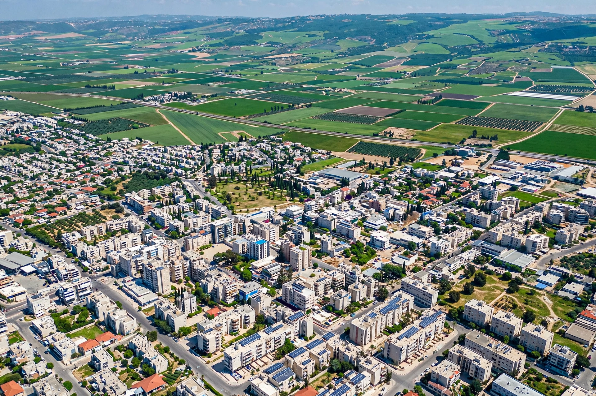

Afula
From Wikipedia, the free encyclopedia
| Afula עֲפוּלָה | |
|---|---|
| Country | Israel |
| District | North |
| Founded | 1925 |
| Population | ~60,000 |
Afula (Hebrew: עֲפוּלָה) is a city in the Lower Galilee region of Israel, often known as the "Capital of the Valley" since it is located in the Jezreel Valley. It lies about 20 km south of the Sea of Galilee.
History
The site has been inhabited since ancient times; nearby tells contain Bronze and Iron Age remains. The modern town was founded in 1925 by the American Zion Commonwealth on land purchased in the Jezreel Valley, and grew around a railway station on the Jezreel Valley railway, a branch of the Hejaz Railway.

Central AfulaEconomy and institutions
Afula serves as a regional commercial and medical centre for the surrounding agricultural settlements. The HaEmek Medical Center in Afula is one of northern Israel's major hospitals. The city also hosts colleges and light industry.
Demographics
The population is predominantly Jewish, including a large community of immigrants from the former Soviet Union and from Ethiopia. Afula's municipal area has expanded with the neighbourhoods of Afula Illit (Upper Afula) on the slopes of Mount Moreh.